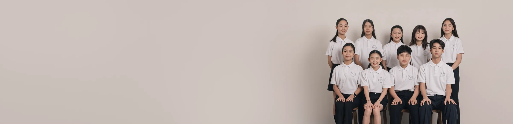

음악을 사랑하는 아이들이
만들어 가는 현악 앙상블입니다.
We practice sharing and service through music.

앙상블 메이는 음악을 사랑하는 아이들이 만들어 가는 현악 앙상블입니다.
바이올린, 비올라, 첼로가 모여 한 곡을 완성합니다.
1년에 한 번 정기 공연을 열고, 그 사이사이 자선 공연으로 무대에 섭니다.
연주로 얻은 것을 필요한 곳에 나누는 일을 앙상블의 일부로 여깁니다.
Ensemble MAY is a string ensemble created by children who love
music. Violin, viola, and cello come together to complete a single piece.
We hold one regular concert each year, and perform at charity concerts through
the seasons. Giving back through what we play is part of what this ensemble is.
Director
단장 이야기
○○○
Director · Piano
저는 오래 반주를 했습니다. 무대 옆에서 아이들이 첫 음을 내는 순간을 가장 가까이서 보는 자리입니다.
그 자리에서 자주 본 것은 실력보다 표정이었습니다. 잘 켜는 아이가 즐거워 보이지 않고, 아직 서툰 아이가 활을 들 때 눈이 반짝이는 일이 많았습니다. 연습이 숙제가 된 아이와, 아직 음악인 아이의 차이였습니다.
앙상블 메이는 그 차이를 지키려고 만들었습니다. 그래서 아이들이 이미 알고 있는 곡으로 시작합니다. 지브리와 영화음악으로 한 해를 열고, 바흐는 아이들이 먼저 궁금해할 때 꺼냅니다.
혼자 잘하는 것보다 옆 사람 소리를 듣는 것을 먼저 가르칩니다. 현악 앙상블에서는 그게 실력입니다. 그리고 준비한 것을 필요한 곳에 가져갑니다. 박수를 받으러 가는 게 아니라, 음악이 누군가에게 가 닿는 것을 아이들이 직접 보게 하려고 갑니다.
지금까지 연주한 곡
정기 연주회와 자선 공연을 거치며 아이들이 연습한 곡을 모았습니다.
학교가는 길
김광민
문어의 꿈
안예은
Always with me from Spirited Away
Joe Hisaishi
Merry Go Round of Life from Howl’s Moving Castle
Joe Hisaishi
Le Festin
Camille & Michael Giacchino
Sound of Music Medley
Acoustic Cafe
Perfect Day
Joachim Johow
He’s a Pirate from Pirates of the Caribbean
Zanelli · Zimmer · Badelt
B Rossett 드라마 「하얀거탑」
김수진
Csárdás
Vittorio Monti
Violin — 솔로
Concerto for Two Violins in D minor, BWV 1043 1st mov.
J. S. Bach
Waltz from “Masquerade”
Aram Khachaturian
Dance of the Knights
Sergei Prokofiev
Libertango
Astor Piazzolla
Por una cabeza
Carlos Gardel
입단 상담을 받고 있습니다.
바이올린 · 비올라 · 첼로.
어떻게 시작하면 되는지 편하게 물어봐 주세요.